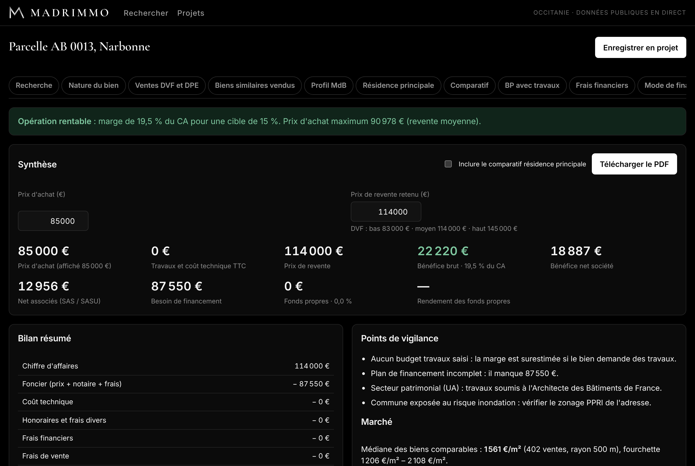

| Le nom | 03 |
| Le métier | 04 |
| Les fondateurs | 05 |
| La méthode | 06 |
| La structure juridique et fiscale | 07 |
| Les objectifs | 08 |
| Une opération type, chiffrée | 09 |
| Le financement | 10 |
| L'outil MADRIMMO | 11 |
| Le logo principal | 12 |
| Le cachet | 13 |
| Versions, tailles et interdits | 14 |
| Les couleurs | 15 |
| La typographie | 16 |
| Le ton et les signatures | 17 |
| Les applications | 18 |
Les éléments signalés [à compléter] seront renseignés à la création de la société. Les chiffres de l'opération type sont un exemple illustratif, calculé avec l'outil MADRIMMO.
Les trois mots se chevauchent. Le A appartient à Maëva comme à Adrien, le I relie Adrien à l'immobilier. Le nom raconte une association, pas une addition.
Le monogramme reprend cette idée en un seul trait : la dernière jambe du M devient un A. On le lit d'abord comme un M, on y découvre ensuite le A.
MADRIMMO est une société de marchand de biens : elle achète des logements anciens qui ont besoin d'être remis à niveau, les rénove, puis les revend à des particuliers. Sa valeur ajoutée tient en trois gestes : trouver le bon bien, l'acheter au bon prix, le transformer avec méthode.
Un prix d'achat fixé à partir des ventes réelles du quartier et du coût des travaux, jamais à partir du prix affiché.
Des travaux utiles qui se voient et se mesurent : plan, électricité, salle d'eau, performance énergétique.
Un bien prêt à vivre, des diagnostics à jour, un prix argumenté par les ventes comparables.
L'Occitanie, en commençant par l'Aude, où la société a son siège, et l'Hérault : des secteurs que les fondateurs connaissent et peuvent visiter rapidement.
Appartements et petites maisons à rénover, revendus à des acquéreurs en résidence principale.
MADRIMMO est portée par un couple d'associés. Les rôles sont partagés : chaque opération est analysée, négociée et suivie à deux. Les décisions d'achat se prennent ensemble, chiffres à l'appui.
Commercial dans l'intégration audiovisuelle à Montpellier : prospection, négociation et pilotage de projets techniques avec des clients professionnels.
Investisseur immobilier à titre personnel, propriétaire de deux biens, et investisseur en bourse.
Apporte à MADRIMMO : le réseau, la négociation, la lecture des chiffres d'une opération.
[à compléter : parcours professionnel de Maëva]
[à compléter : expérience immobilière ou compétences utiles au projet]
Apporte à MADRIMMO : [à compléter]
Annonces, agents immobiliers, notaires, réseau. Chaque piste est saisie dans l'outil MADRIMMO par son adresse, sa parcelle ou une capture de l'annonce.
L'outil interroge en direct les données publiques : cadastre, plan local d'urbanisme, ventes réelles (DVF), risques naturels, diagnostics énergétiques du voisinage.
Le bilan prévisionnel calcule le prix d'achat au-delà duquel la marge passe sous la cible de 15 % du prix de revente. On ne négocie jamais au-dessus.
Budget de travaux chiffré avant l'offre, avec une réserve pour aléas de 6 %. Entreprises locales, suivi de chantier par les deux associés.
Prix de revente argumenté par les biens comparables vendus à proximité. Objectif : revendre dans les 12 mois suivant l'achat.
Société par actions simplifiée, détenue à parts égales par les deux associés. Statuts souples, présidence et direction générale réparties entre eux. Activité : marchand de biens immobiliers (code APE 68.10Z).
15 % jusqu'à 42 500 € de bénéfice, 25 % au-delà, sous les conditions du taux réduit PME (capital libéré et détenu au moins à 75 % par des personnes physiques).
En s'engageant à revendre dans les 5 ans, le marchand de biens paie des droits de mutation réduits : les frais d'achat tombent autour de 3 % du prix, au lieu de 7 à 8 % pour un particulier.
La revente d'un logement ancien est en principe exonérée de TVA. La TVA sur la marge ou sur le prix total s'applique dans des cas précis (option, terrain à bâtir, travaux qui rendent l'immeuble neuf). L'outil MADRIMMO calcule les trois régimes.
Les bénéfices sont distribués en dividendes, soumis au prélèvement forfaitaire unique de 31,4 % (taux 2026). En SAS, pas de cotisations sociales sur les dividendes.
Capital social : 1 000 €
Siège : [adresse du siège]
Immatriculation : en cours de création
Les règles fiscales résumées ici sont à valider avec l'expert-comptable de la société avant sa création.
opérations la première année
par opération, travaux compris
de marge minimum sur le prix de revente
Des appartements et petites maisons à rénover, menés à côté des emplois actuels des deux associés. Objectif : prouver la méthode, constituer un historique d'opérations réussies et une relation de confiance avec une banque.
Deux opérations menées à leur terme, de l'achat à la revente, et au moins 50 000 € de marge générée au total. Cet historique sert de base pour augmenter le rythme et ouvrir le financement à des investisseurs.
Affiché 140 000 €, acheté 120 000 € après négociation, rénové pour 32 000 € TTC et revendu 205 000 € neuf mois plus tard. Vente exonérée de TVA (logement ancien).
| Prix de revente | 205 000 € |
| Prix d'achat | − 120 000 € |
| Frais d'acquisition (3 %) | − 3 600 € |
| Travaux TTC | − 32 000 € |
| Réserve pour aléas (6 %) | − 1 920 € |
| Frais financiers (prêt, 9 mois) | − 5 388 € |
| Frais de vente (diagnostics) | − 500 € |
| Bénéfice avant impôt · 20,3 % | 41 593 € |
| Impôt sur les sociétés | − 6 239 € |
| Bénéfice net de la société | 35 354 € |
| Net pour les associés après PFU | 24 253 € |
de marge sur le prix de revente, pour une cible de 15 %.
prix d'achat maximum pour rester à 15 % de marge : la négociation garde une réserve de 10 525 €.
de besoin de financement, couvert par 40 000 € de fonds propres et 130 000 € de prêt.
Exemple calculé avec le moteur de l'outil MADRIMMO (bilan prévisionnel, prêt à 4,5 % sur 9 mois avec 1 000 € de frais de dossier). Il illustre la méthode et ne constitue pas une prévision.
Apport des associés en capital et en compte courant. Il couvre en général les frais et une partie de l'achat, ce que les banques demandent pour un premier dossier.
Prêt in fine ou ligne de crédit sur la durée de l'opération, remboursé à la revente. C'est le financement principal des premières opérations.
Une fois l'historique constitué : emprunt obligataire, comptes courants d'associés rémunérés ou co-investissement par opération.
• Une page de garde et une synthèse : prix, travaux, revente, marge, verdict.
• Le bilan prévisionnel complet, au format du bilan marchand de biens.
• Le plan de financement : besoins, ressources, coût de chaque source.
• Le marché : ventes réelles comparables, prix au m², données publiques.
• Les points de vigilance, écrits noir sur blanc : urbanisme, risques, DPE.
• Le prix d'achat maximum et la sensibilité de la marge à la négociation.

Recherche · adresse, parcelle, annonce ou capture d'écran
Nature du bien · cadastre, PLU, risques
Ventes DVF et DPE · prix réels du secteur
Biens similaires · ventes comparables sur carte
Profil · SAS ou SARL, fiscalité de sortie
Résidence principale · le même bien acheté en nom propre
Bilan avec travaux · le bilan marchand de biens
Financement · fonds propres, prêt, obligataire
Coûts et frais de vente · huissier, géomètre, agence
Récapitulatif · synthèse et dossier PDF
Un M ouvert dont la dernière jambe devient un A. Un seul trait, épais et régulier, aux angles vifs. Le A n'a pas de barre.
Cormorant Garamond SemiBold, en capitales espacées de 16 %. Le filet vertical sépare le symbole du nom.
Aucun élément dans le cadre en pointillés : une marge égale à la moitié de la hauteur du symbole, sur chaque côté.
L'application, la signature mail, la carte de visite, les réseaux sociaux, l'en-tête des documents. C'est le logo par défaut.
Le même monogramme, dans un double filet, avec le nom dessous : une marque de maison, comme un poinçon d'orfèvre. Il signe les documents qui engagent la société.
Couverture des dossiers bancaires et investisseurs, page de garde des PDF d'analyse, tampon, panneaux de chantier, papier à en-tête. Un seul cachet par page, jamais à côté du logo principal.
largeur minimale du symbole seul (24 px à l'écran)
largeur minimale du logo principal
largeur minimale du cachet
Noir et blanc, sans compromis. Le chrome est une matière, pas une couleur : il est réservé au logo, sur fond noir.
RVB #000000 · CMJN 60 40 40 100 (noir riche) · Pantone Black 6 C
RVB #FFFFFF · papier blanc naturel, sans azurant si possible
#8C8C8C pour les légendes sur noir ; #232323 pour les séparateurs et cadres sur noir. Sur papier : gris texte #6B6B6B.
Dégradé #6E6E6E · #F7F7F7 · #8A8A8A · #E8E8E8 · #9A9A9A. En impression : Pantone 877 C (argent métallisé) ou marquage à chaud argent.
Seule exception, dans l'application : les indicateurs de marge (vert, ambre, rouge atténués) et les étiquettes DPE gardent leur couleur, parce qu'elles portent une information.
Serif classique à fort contraste, pour le nom, les titres de documents et de pages, les grands chiffres de synthèse. Medium pour les titres, SemiBold pour le logo.
Jamais pour un tableau de chiffres ou un texte long.
Sans serif nette et très lisible, pour l'application, les tableaux, les bilans et le texte courant. Chiffres à chasse fixe pour aligner les colonnes.
Mentions en capitales espacées de 24 %, en petit corps.
Un chiffre plutôt qu'un adjectif. « Marge de 20 % » et non « belle opération ».
Phrases courtes, une idée par phrase. Vouvoiement avec les partenaires, banques et vendeurs.
Les risques sont écrits à côté des chiffres, jamais cachés en annexe. C'est ce qui inspire confiance.
Sous le logo et sur tous les documents de la société.
Pour le site, les réseaux sociaux et les présentations aux investisseurs.
Icône de l'application et avatar des réseaux sociaux : monogramme chromé à 60 % de la largeur, sur fond noir.